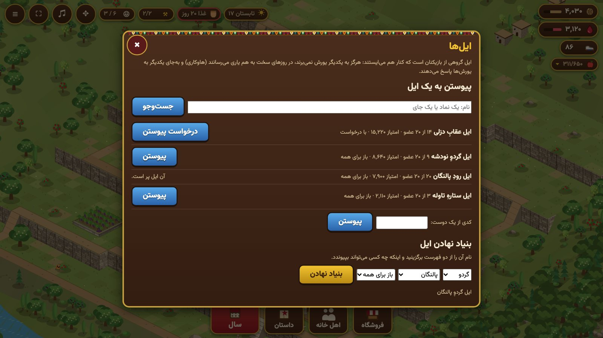

ایلها و امتیاز
ایل گروهی است از دستبالا ۲۰ بازیکن که کنار هم میایستند. ایل بازی آنلاین و دیوانخانه سطح ۲ میخواهد. با دکمهٔ ایل بازش کنید.
یافتن، پیوستن و بنیاد نهادن

- جستوجو با نام: یک نماد یا یک جای را بنویسید («عقاب»، «دزلی»). نیرومندترین ایلها نخست میآیند.
- به ایلِ باز در دم بپیوندید، یا از ایلی که با درخواست است بخواهید: رئیس یا یک ریشسفید تصمیم میگیرد.
- کدی از یک دوست شما را بیدرنگ به ایل او میبرد. کد بالای پنل ایل نوشته است.
- ایل خود را بنیاد نهید: نامش را از دو فهرست برگزینید (یک نماد و یک جای، مانند «ایل عقابِ دزلی») و اینکه برای همه باز باشد یا با درخواست.
رئیس، ریشسفیدان، اعضا
بنیادگذار رئیس است. رئیس میتواند ریشسفید برگزیند، ایل را به دیگری بسپارد، عضوی را بیرون کند و معین کند چه کسی بپیوندد. ریشسفیدان میتوانند درخواستهای پیوستن را بپذیرند یا نپذیرند. اگر رئیس برود، یک ریشسفید جای او را میگیرد؛ با رفتن واپسین عضو، ایل بسته میشود.
هاوکاری: یاری به یکدیگر

- از ایل یک چیز را که کم دارید بخواهید: گردو، آب انار یا یک میوه. درخواستی آماده است، هر بار یکی.
- به کسانی که میخواهند بدهید، هر بار ۵۰ / ۲۰۰ / ۵۰۰. آنچه میدهید از انبار خودتان کم میشود.
- سقفی روزانه هست که با دیوانخانه شما بالا میرود: روزی ۳۰۰ گردو یا آب انار در سطح ۱، تا ۳٬۰۰۰ در سطح ۵، و یکدهم آن برای هر میوه.
- نخستین هدیهٔ هر روز، جایگاه شما نزد ایل را یکی بالا میبرد.
یورش و ایل
- یورش واقعی درون ایل نیست. روستای همایلی هرگز به شما پیشنهاد نمیشود.
- یورش تمرینی. میتوانید روی روستای همایلی تمرین کنید: چیزی برده نمیشود، نگهبانی آسیب نمیبیند و از جایگاه شما کم نمیشود.
- پاسخ بهجای یکدیگر. وقتی بیگانهای به عضوی یورش میبرد، هر همایلی میتواند بهجای او به آن روستا یورش متقابل ببرد، بیآنکه از جایگاهش کم شود.
خبرهای ایل
خبرها را خود بازی مینویسد: چه کسی پیوست، چه کسی چه خواست، چه کسی به که یاری داد، به چه کسی یورش شد، چه کسی پاسخ داد. گفتوگویی در کار نیست.
امتیاز روستا
امتیاز نشان میدهد روستای شما تا کجا پیش آمده است. هر ساختمانِ تمامشده، سطحش ضرب در وزنی شمرده میشود: دیوانخانه ۱۰۰، بیشتر ساختمانها ۱۰، تلهها ۳، دیوارها ۱. هر سالی که روستا پابرجا مانده ۲۵ میافزاید. امتیاز خود را در پنل سال میبینید، و دیگران آن را در ایل و هنگام دیدن روستای شما میبینند. امتیاز ایل جمع امتیاز اعضای آن است.